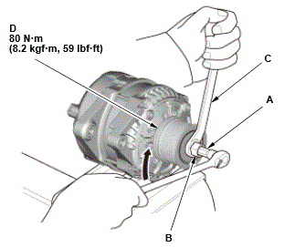

Removal and Installation
- Alternator - Remove
- OAD Pulley Seal Cap - Remove
1. Remove the OAD pulley seal cap (A) by piercing the center of the rubber cap with a flat screwdriver and prying it loose.
NOTE: While the cap is off, the grease inside the OAD pulley is exposed. Do not wipe the grease off, and make sure it does not become contaminated. - OAD Pulley - Remove
1. Clamp the alternator firmly in a vise. 2. Insert the alternator OAD pulley holder into the OAD pulley.

Courtesy of HONDA, U.S.A., INC.3. Place a 10 mm hex wrench (A) through center of the alternator OAD pulley holder (B), into hex in the end of the alternator shaft. 4. Hold the alternator OAD pulley holder with a 17 mm wrench (C), then turn the alternator shaft clockwise.
5. Remove the OAD pulley (D).
- All Removed Parts - Install
1. Install the parts in the reverse order of removal.
NOTE:- When installing do not distort the new OAD pulley seal cap.
- Make sure to check that a new cap is installed securely.